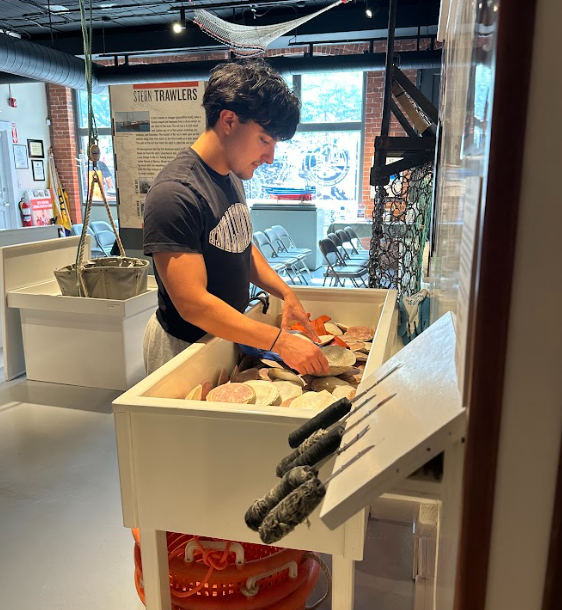
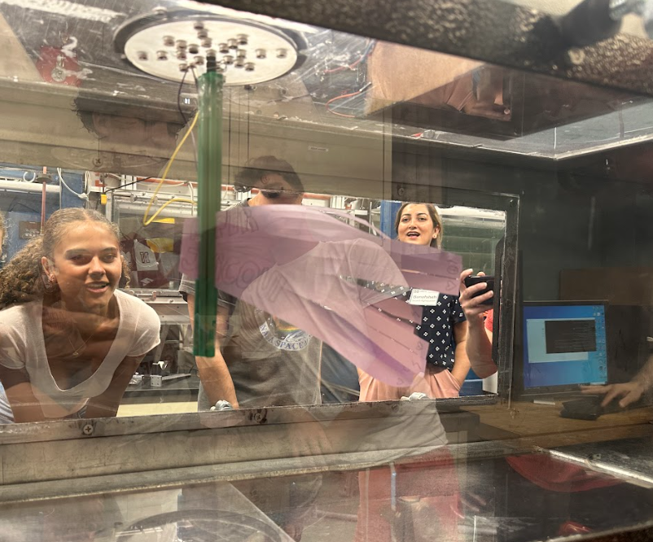
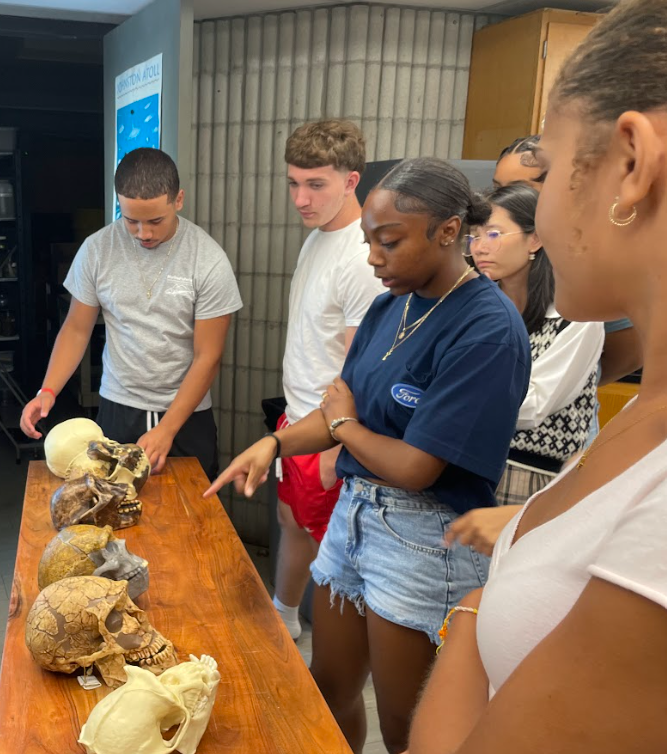
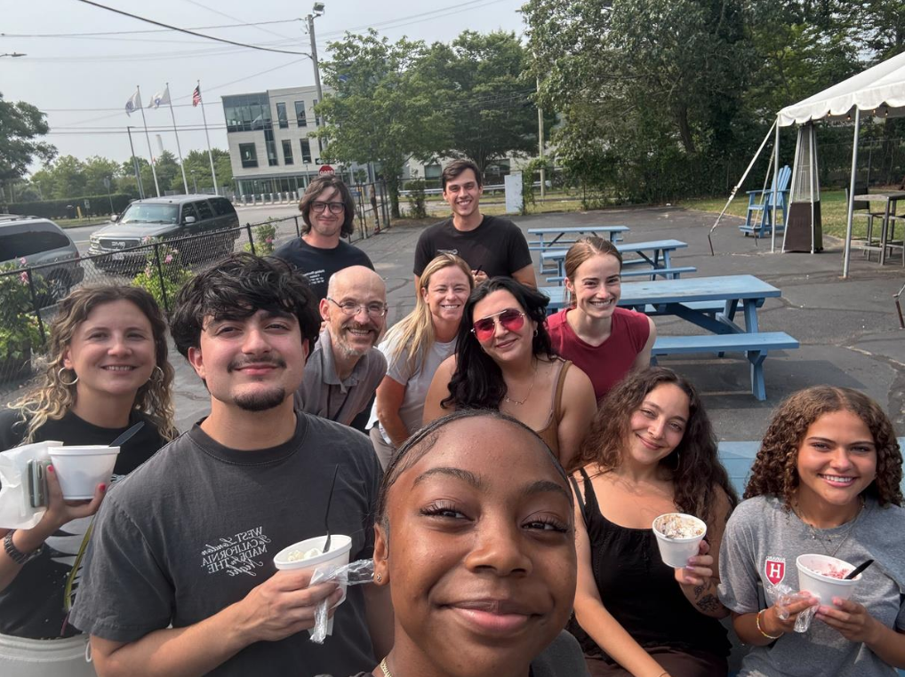

Learning from our summer interns
This summer, the Fay Lab had the opportunity to mentor three interns from New Bedford High School. They worked closely with Kam, Sophie, and Sarah to help progress current projects in the Fay Lab including a mangrove restoration project, a science communication project, and a project analyzing the effects of predation and competition on winter flounder survival. On top of that, interns attended a weekly R Bootcamp to hone their coding skills and learn the basics of data analysis. They also attended a Science Communication workshop during the final week of the internship. All interns gave a final presentation about their projects at the end of the internship. They all did a fantastic job with their projects and we wish them the best with whatever they decide to pursue in the future! We also asked them to write a short reflection of their time at SMAST:
Gavin:

My experience as a SMAST intern was one of much personal growth and finding out who I am. I learned I love to code while at SMAST. I attended coding workshops every Wednesday and also my personal project was one mostly consisting of coding. I was taught R because it is good for data analysis. At first it was a lot and trying to wrap my head around all of the technical parts of my project. But thanks to my lab supervisor, Kamran I was able to help out with his project and figure out how to use R a decent amount considering the short amount of time we spend together on the project. And speaking of my lab. The Fay lab was an amazing group of people I got to work with during my time here. They all made the experience so much more enjoyable and interesting and you can clearly see they are all good friends and work pretty well together. We definitely shared a good amount of laughs during our lab meetings and also I learned what a meeting experience is like as well. Which is going to help me in my future as well. Orientation week was also a lot of fun and educational as well. We got to get an overview of many different projects that are going on at SMAST other than just the one I ended up working on. I learned so much like when we brought up lobster traps every morning from the pier to look at what species we caught. I was able to learn so much about different species of animals that are around me and how to identify them. We also learned so much from the presentations we were able to sit through throughout the week. So much information that just solidified my love for the ocean. Every project is cool and interesting in its own way. I would have been lucky to be a part of any one of them. Even though I really liked the one I was a part of. Overall, this internship taught me a useful skill (coding), taught me what a 9-5 is like, and left me with memories I will never forget.

Piper:
As I walked into the SMAST building for the first time a feeling resonated with me telling me that this is where I want to be. While first this notion was strong and sudden, the light that stemmed from it did not dim, instead it grew. The first week at SMAST quickly began to foster and care for this light, teaching me a variety of lessons; communication, how to survive a sinking ship, how to pick up a lobster, and so much more, lessons I vow to carry with me for the next five weeks. In such an inviting atmosphere I grew increasingly comfortable by the second, always being encouraged to ask questions and talking to people with crazily impressive qualifications. These conversations gave me the realization that the academic path is winding and never ending, showing me that no matter which way I lead myself, as long as I am constantly in a state of learning, I am doing the right thing. As I look back on my time at SMAST I find myself overwhelmingly appreciative of the amazing experiences the internship gave me, the incredible lessons and skills I learned over my time here including coding and proper scientific communication. As well as relationships that I will cherish with me as I continue down the marine science path, both through the people who acted as role models and the friendships that I found on field trips or even sitting in my cubicle. Having done many marine programs in my life I can confidently say the SMAST internship, the building and the people inside are very special.
Amaya:

At the beginning of this internship in July 2025, starting at SMAST felt like a whole new world in the sense of marine science. I, as well as the other high school interns felt immediately welcomed by the SMAST community. In just the first couple days I learned so much from the scientific names of sea creatures to learning how to put on survival suits in under 60 seconds. The introduction to SMAST was educational and eye opening but also was fun and light hearted. With what I learned in just the first few days I knew this is definitely something that I want to pursue, which I did not know walking in. As I continue on with this internship, I am excited to learn more about the different options of professions connected to marine fisheries and how what we do at SMAST directly helps the local people of New Bedford, as well as all over the world. I am looking forward to engaging with the marine science community while learning new skills that I can apply in academic and real world situations.
 (Learn more about SMAST’s high school internship program).